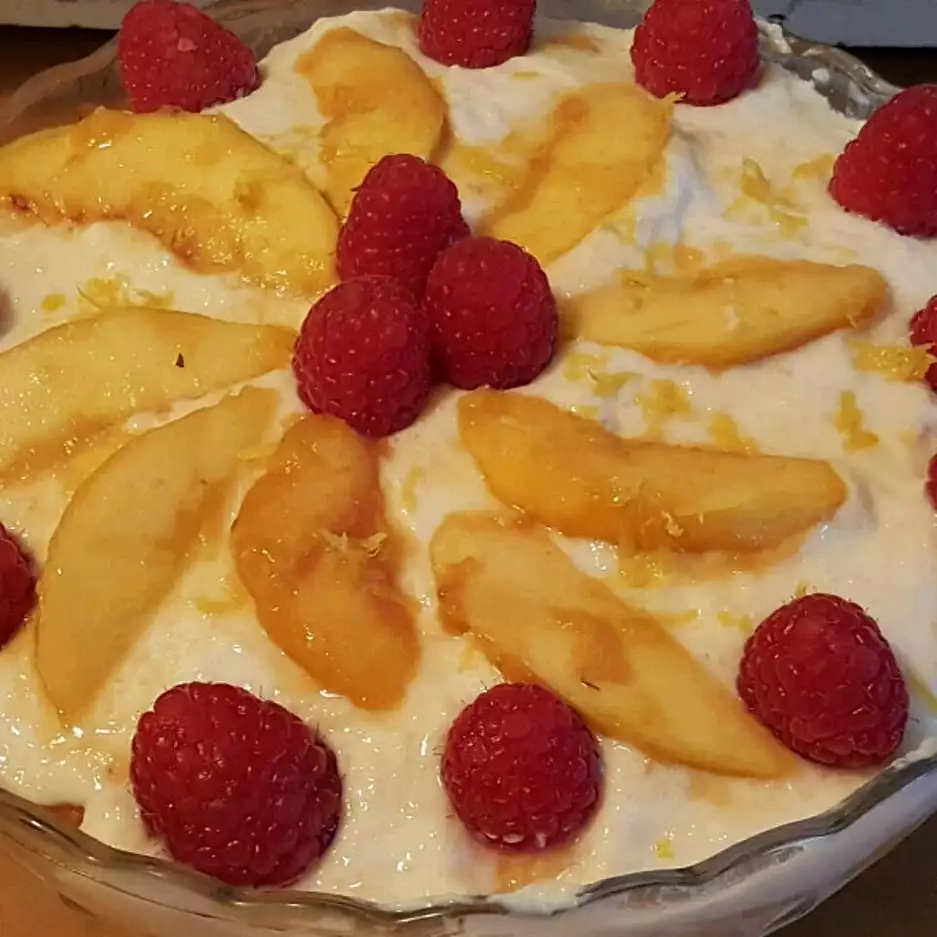

Fresh Peach Trifle

Ingredients
- 6 large ripe peaches - peeled, pitted and sliced
- 1 tablespoon fresh lemon juice
- 2 (8 ounce) containers vanilla yogurt
- 1 teaspoon lemon zest
- 1 (10 inch) prepared angel food cake
Steps
- Place peaches in a large bowl, and gently toss with lemon juice. Place 1 cup of peaches in a blender, set aside remaining slices, and blend until smooth. Place yogurt into a bowl; stir in the peach puree and lemon zest until well blended.
- Cut the angel food cake into squares and place half in the bottom of a glass dish. Spoon half of the peach slices over the cake. Cover with half of the yogurt mixture. Place remaining cake squares over the yogurt. Top with peaches, reserving 5 or 6 slices for garnish. Cover with remaining yogurt mixture. Garnish with peach slices. Refrigerate until ready to serve.